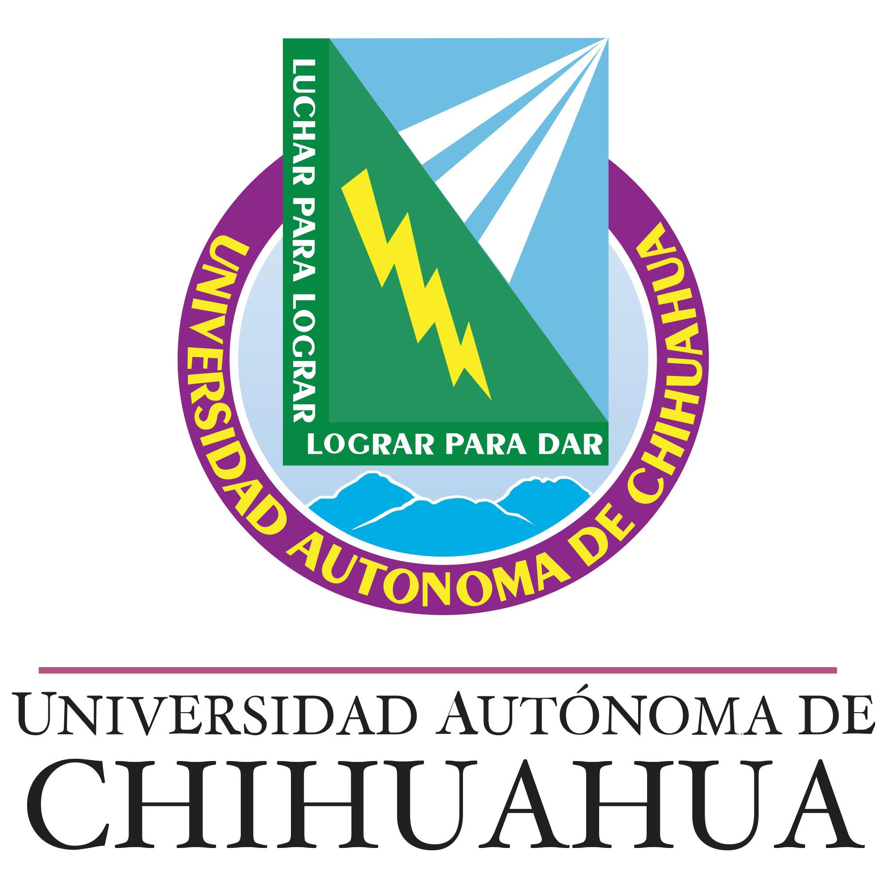

Agisto 2021 - Actualidad
Ingeneiro de Software
Universidad Autonoma de Chihuahua

Agisto 2021 - Actualidad
Ingeneiro de Software
Universidad Autonoma de Chihuahua

Agosto 2016 - Julio 2019
Educación media superior
COBACH 10


Aptitudes en el trabajo
Mi combinación de responsabilidad, habilidades de liderazgo, iniciativa y capacidad para manejar problemas me convierte en un activo valioso en cualquier entorno laboral. Estoy comprometido a seguir desarrollando estas aptitudes y aportando lo mejor de mí en cada proyecto en el que participe.
Idiomas:
Inglés (Intermedio)
Mi tiempo libre se centra en actividades que alimentan mi curiosidad, me desafían a crecer y me permiten explorar nuevas facetas de mí mismo y del mundo que me rodea. La lectura, el aprendizaje continuo y los nuevos retos son pilares fundamentales en mi vida, y me esfuerzo por incorporarlos de manera activa en mi día a día.